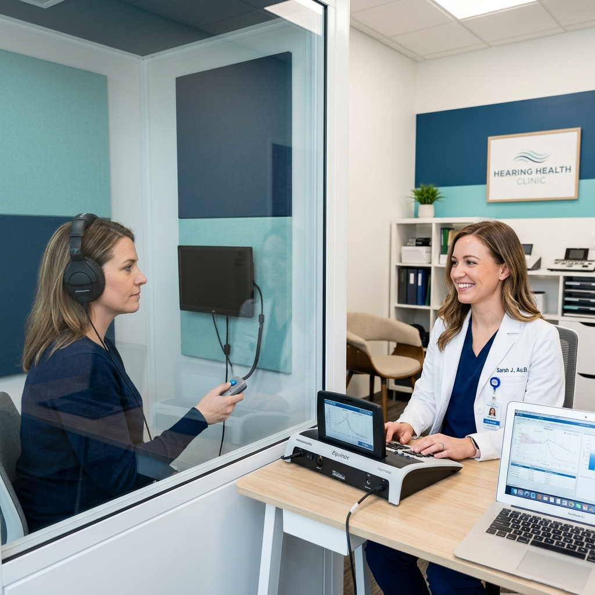

Audiometría Clínica en Viña del Mar
Evaluación auditiva profesional con equipos calibrados para conocer con precisión tu capacidad auditiva.
¿Qué es una audiometría?
La audiometría es un examen clínico que permite evaluar la capacidad auditiva de una persona. Mediante el uso de equipos calibrados, el fonoaudiólogo mide qué tan bien escuchas diferentes frecuencias y volúmenes de sonido, identificando si existe algún tipo de pérdida auditiva, su grado y sus características.

¿Para qué sirve?
La audiometría permite:
- Detectar si existe pérdida auditiva y en qué grado
- Identificar qué frecuencias del sonido están afectadas
- Determinar si la pérdida es de conducción, sensorioneural o mixta
- Establecer una línea base para monitorear cambios en el tiempo
- Orientar la selección y programación de audífonos, si son necesarios
¿Cuándo es recomendable realizarla?
Una evaluación auditiva es recomendable cuando se presentan situaciones como:
- Dificultad para entender conversaciones en ambientes con ruido
- Necesidad de subir el volumen de la televisión o dispositivos
- Sensación de que las personas hablan "bajo" o "murmuran"
- Zumbidos o pitidos persistentes en los oídos (tinnitus)
- Como control preventivo guiado por el fonoaudiólogo
- Exposición frecuente a ruidos fuertes en el trabajo o actividades
¿Cómo es el proceso?
En BeopenSound, la audiometría se realiza de forma profesional y cómoda:
- Entrevista inicial: Conversamos sobre tus síntomas, historial y necesidades
- Otoscopía: Revisión visual del canal auditivo
- Audiometría tonal: Medición de umbrales auditivos por frecuencia
- Logoaudiometría: Evaluación de la comprensión del habla
- Informe y orientación: Explicación clara de los resultados y recomendaciones
Preguntas frecuentes sobre audiometría
¿Qué es una audiometría?
Es un examen que evalúa la capacidad auditiva midiendo qué tan bien escuchas diferentes tonos y volúmenes. Se realiza en un entorno controlado con equipos calibrados.
¿Cuándo debería realizarme una audiometría?
Los controles auditivos pueden ser recomendables según los antecedentes, la exposición al ruido, los cambios percibidos en la audición y la orientación del profesional.
¿La audiometría duele?
No. La audiometría es un examen completamente indoloro. Solo requiere que escuches sonidos a través de auriculares e indiques cuándo los percibes.
¿Cuánto dura una audiometría?
El examen dura aproximadamente 20 a 30 minutos. Incluye la evaluación y la explicación de los resultados por parte del fonoaudiólogo.
Cuida tu audición hoy
Agenda tu audiometría clínica con nuestro equipo profesional en Viña del Mar.
Agendar evaluación auditiva